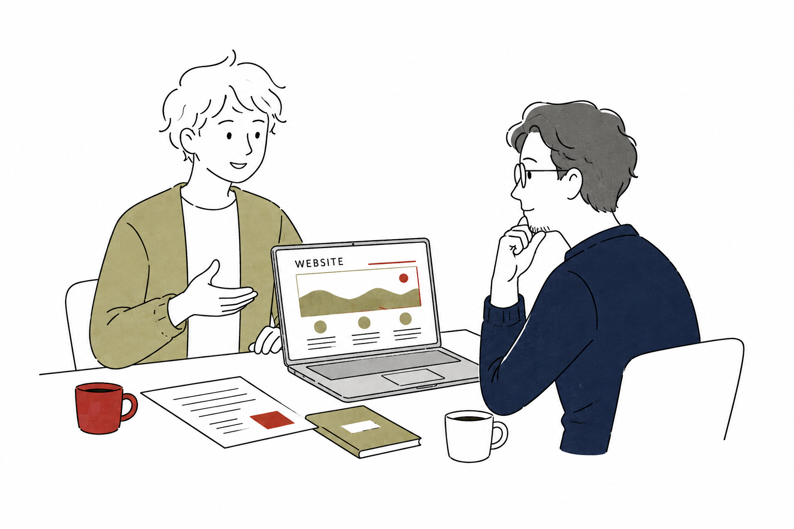
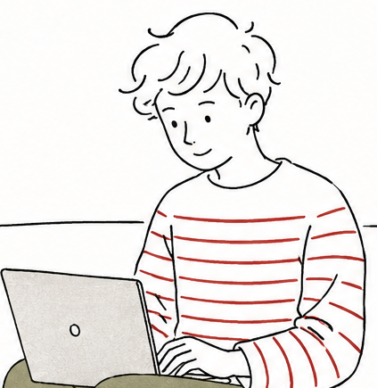
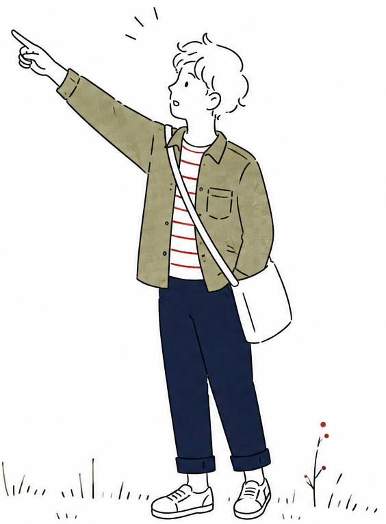
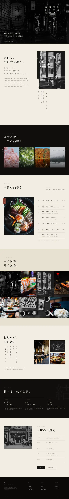
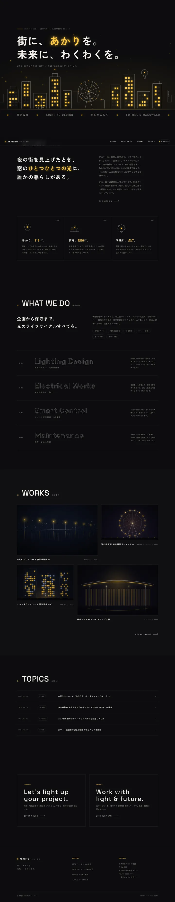
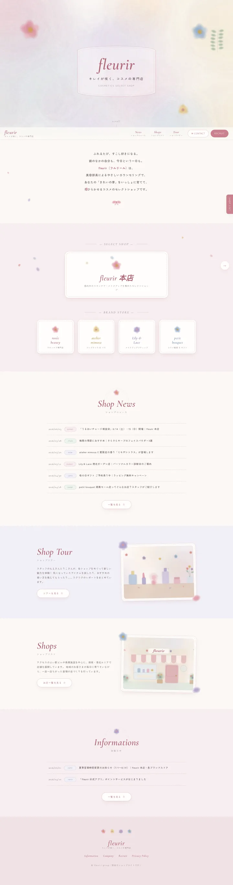
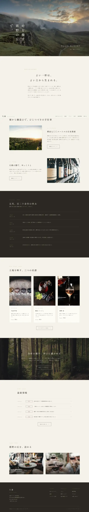
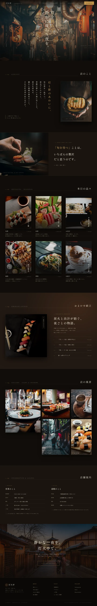

一緒に育てていける
サイト作りを。
船橋でひとり、ホームページをつくっています。
お店の想いをじっくり聞いて、「らしさ」のあるサイトに。
公開してからも、長くいっしょに育てていきましょう。


こんにちは。
Linplan 代表の坪山ちひろです。
HP制作会社で腕を磨いた後、独立。
現在はシステムエンジニアとしての知識を生かしつつHP制作中。
ホームページ制作だけでなく、業務アプリの制作やAI業務支援なども行っています。
制作は、お客様と出来るだけ「対面」でコミュニケーションを取ることを、大切にしています。
ホームページを、事業の武器に。
ホームページを作ったはいいものの、「あるだけ」になっていませんか？
私たちは制作を通じて、いっしょに事業の成長のお手伝いをしていきます。
ホームページ出来上がり
ホームページから見つけてもらい、新しいお客さまとの最初の接点を。
つながり続ける
予約・会員などの業務アプリで関係を育てる。業務を拡大していく段階です。
大きく広げる
AIで手間を減らし、空いた時間を成長へ。
木が森になるように、事業を育てます。
集客 × 継続 × 効率
3つがめぐって、事業が育っていく。
もちろん、まずは1つだけのご依頼も大歓迎。今の事業に必要な「次の一歩」から始めましょう。
そのサイト、AI時代も戦えていますか？
検索結果の一番上は、もう青いリンクではなく「AIの回答」になりました。
そこに載らないと、比較してもらう土俵にすら立てないんです。
心当たりのあるものに、チェックしてみてください。
ひとつでも当てはまったら、それが始めどき。

3つの領域で、まとめて相談できる
複数の会社に発注する手間はいりません。
事業を伸ばすために必要なデジタル領域を、私がまとめてお引き受けします。
HP 制作
コーポレート・店舗・サービスサイトを、AI検索（SEO/AEO/GEO）標準対応で。
WordPressやレスポンシブ、公開後の運用まで、一通りお任せください。
アプリ制作
iOS / Android のモバイルアプリや業務Webアプリを、企画から開発まで。お客様との継続的な接点づくりと、日々の業務効率化をお手伝いします。
AI 業務支援
ChatGPTや生成AIを活かした業務効率化、AIチャットボットの導入をご支援します。
空いた時間を、事業の成長に回せます。
その不安、ぜんぶ解消できます。
さきほどの「困った」を、ひとつずつ仕組みで解決していきます。
私たちを選ぶ、6つの理由です。
これまでの成果物
自社プロダクトと制作実績をご紹介します。
Original Products｜自社プロダクト
自分で課題を見つけ、企画・設計・実装まで完結させたプロダクト。同じ作り手・同じ品質で、お客様の開発にも対応します。


Real Works｜制作実績
ご相談の際に完成イメージを掴んでいただけるよう、実際の案件と同じ品質で見本サイトを制作しました。デザインから実装、AEO/GEO対応まで一気通貫で仕上げています。





ご相談から納品までの流れ
何が起きるかを、事前にちゃんとお伝えします。先の見える進め方で、不安をひとつずつ減らしていきます（合計 約12週間）。
ヒアリング
目的・背景・ターゲットを丁寧に伺います。専門用語は随時かみ砕いて説明します。
設計・構成
サイトマップと情報設計。必要なコンテンツと方向性を固めます。
デザイン
世界観を形に。修正はデザイン段で2回まで（軽微修正は無制限）。
実装
レスポンシブ・AEO/GEO・表示速度に配慮して構築します。
公開
公開作業と各種計測の設定。コード・データは全権お渡しします。
運用・改善
公開後もKPIを見ながら一緒に改善。月額1万円〜の運用プランもご用意。
よくあるご質問
中小企業のHP・IT・AI 相談室
「ホームページっていくらかかるの？」「AIって何に使えるの？」——
よくいただく素朴な疑問に、現役の制作者が売り込み抜きの本音でお答えするブログです。
ChatGPTに引用されるサイトの3つの共通点
AIに引用されるサイトには共通点があります。①質問への即答 ②独自の一次情報 ③構造化データ。大手でなくても引用される理由を解説します。
中小企業がAI検索時代に備えるためにできること
難しい技術より、まず情報を正しく揃えることが先。AI検索時代に中小企業が今すぐできる4つのことを、具体的に解説します。
WordPressとオリジナル制作、中小企業はどちらを選ぶべきか
自分で更新したいならWordPress、独自性や速度ならオリジナル。費用・更新・セキュリティを対比表で比較し、選び方の目安を示します。